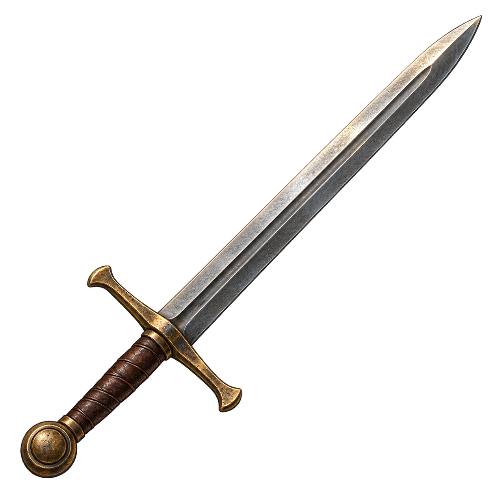
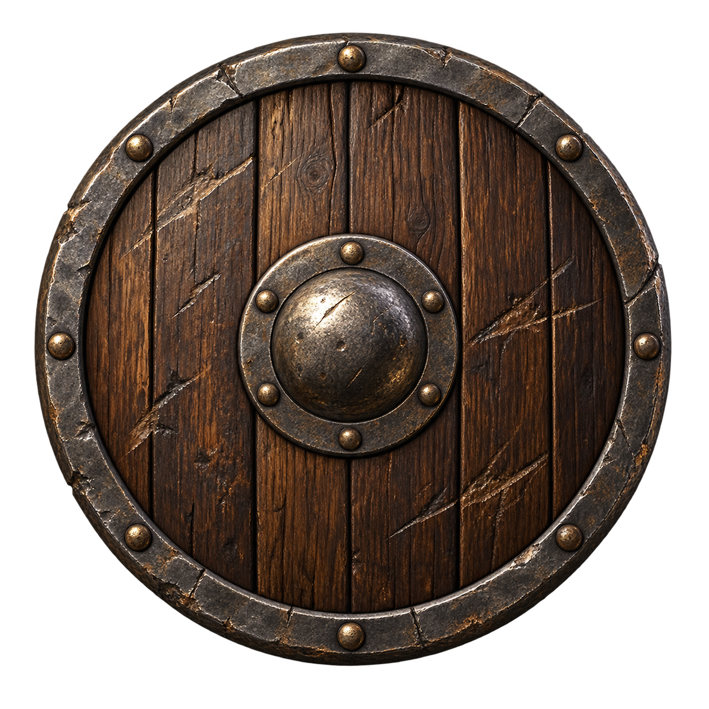

Règles et fonctionnement
Équipements des héros
Comprendre les emplacements, les sources d’équipement et les limites d’acquisition.
Comprendre ce que cela implique
Il faut distinguer posséder un objet dans les bagages et le porter. Les incompatibilités, comme une arme à deux mains et un objet déjà tenu, sont vérifiées avant toute modification : un refus ne doit pas consommer l’objet.
Les stocks et quotas évitent qu’un rechargement de page crée de nouveaux équipements. Une récompense débloquée peut encore dépendre du quota disponible au moment de son retrait. Le nom du fichier d’image n’indique pas les pouvoirs de l’objet : seuls sa fiche et ses bonus font foi.


Dans cet article
Détails de référence
Texte de référence mis en forme et conservé dans l’historique de cet article. Les paragraphes datés peuvent décrire une évolution ou une étape antérieure.
Illustrations
Les 75 équipements et les huit reliques royales utilisent les illustrations fournies dans app/assets/equipment. L’association explicite se trouve dans app/js/core/equipment-art.js. Les noms de fichiers sont techniques : ils ne définissent ni le nom ni l’histoire de l’objet dans le jeu.
Exemples d’adaptation : vampirerobe.png illustre la Robe du seigneur, t13catalyst.png le Cube de protection, tiara.png la Couronne du souverain. Deux arcs deviennent des arbalètes ; la fronde devient un couteau de voyage. Les identifiants sauvegardés, les bonus, les classes, les emplacements et les règles d’obtention sont conservés. Le champ family: "bow" comprend ainsi les arcs et les arbalètes.
Les visuels s’affichent dans l’équipement, les bagages, les fiches, les offres, les réserves et le butin. Le cache hors ligne inclut les illustrations utilisées. Les assets non associés sont conservés pour des ajouts futurs.
La page playtest/equipment-gallery.html est une galerie statique du catalogue illustré au moment de cette intégration, consultable directement dans un navigateur.
Le catalogue app/js/core/hero-item-catalog.js définit 75 équipements, cinq par famille. item-catalog.js les expose avec les ressources, objets de quête et huit équipements royaux existants. Les images et identifiants des anciens objets sont conservés.
Équipement
Classes : Guerrier (
warrior), Éclaireur (ranger), Mage (mage). Les anciens identifiantsfighteretscoutcorrespondent respectivement au Guerrier et à l’Éclaireur. Les héros historiques sans classe restent compatibles.Huit emplacements conservés : tête, cou, torse, main principale, main secondaire, pieds, deux accessoires.
Arcs et bâtons : deux mains. Retirer d’abord l’objet incompatible ; le moteur refuse l’action sans modifier l’inventaire.
Un seul manteau ; deux anneaux différents, ou un anneau et un manteau.
Les bonus s’additionnent aux statistiques du héros. La santé augmente les PV maximum sans soigner ; retirer un objet réduit les PV actuels seulement s’ils dépassent le nouveau maximum.
Les noms « arc », « arme de jet » ou « bâton » ne changent pas les règles de portée ou de magie du combat. Ils apportent les bonus chiffrés du catalogue. Aucun système de munitions n’est ajouté.
Où obtenir les objets
Depuis un lieu accessible où le héros est présent : Équipements · commerce, forge et découvertes. La taverne propose également les offres du recéleur. Le héros doit être actif et disponible ; un lieu ennemi ou détruit ne permet pas ces opérations.
| Source | Règle |
|---|---|
| Commerce général | Trois objets communs ou peu communs : vêtements, bottes, anneaux, colliers. |
| Forge, rayon marchand | Deux armes de mêlée supplémentaires. |
| Armuriers, rayon marchand | Deux protections supplémentaires : boucliers, casques, armures lourdes. |
| Académie de magie, rayon marchand | Deux bâtons, focaliseurs ou robes supplémentaires. |
| Champ de tir, rayon marchand | Deux arcs ou armes de jet supplémentaires. |
| Fabrication à la forge | Trois commandes maximum par lieu ; or, fer et bois consommés. Niveau 1 : commun et peu commun. Niveau 2 : rares également. Familles métalliques uniquement. |
| Recéleur de taverne | Deux objets peu communs ou rares, prix majoré de 50 %. Pas de réapprovisionnement. |
| Quête principale | Une récompense adaptée à la classe à la fin d’une phase terminale sans choix ni transition. Retrait différé dans le panneau Équipements. Un effet de scénario peut aussi réserver une référence précise. |
| Quête secondaire | La première mission terminée pour chaque couple lieu de remise / source (chef ou taverne) ouvre une récompense. Le renouvellement des missions ne renouvelle pas ce bonus. |
| Objectif d’équipement | Un contrat par village ou ville commerciale : rapporter un objet commun précis dans les bagages contre un équipement peu commun. L’échange consomme l’objet et se fait une seule fois. |
| Combat | La première victoire contre l’équipe ennemie d’un lieu ouvre un trophée pour un héros vainqueur actif. Pas de trophée supplémentaire pour les duels libres. |
| Trésor | Chaque lieu distinct visité apporte un fragment, jusqu’à trois. Le trésor se trouve au troisième lieu visité ; une seule récupération par héros. |
| Ruines | Une découverte par lieu de type ruin, partagée entre tous les joueurs. Cette règle s’applique aux ruines présentes dans un scénario ; elle n’ajoute pas automatiquement de lieux à la carte. |
| Prospection | La première découverte d’un gisement ouvre une cache sur ce site pour le joueur découvreur. Une seule cache par zone, même après une nouvelle expédition. |
| Échange entre joueurs | Utilise les échanges existants, avec validation des deux joueurs : objets transportés ou équipés transférés sans en créer de nouveaux. |
Les tirages dépendent des identifiants de lieux et de récompenses. Recharger, rouvrir le panneau, monter un bâtiment de niveau ou le reconstruire ne réinitialise pas les achats et commandes effectués. Chaque rayon marchand a un tirage indépendant : construire un autre bâtiment ne relance pas les rayons existants.
Quantités et prix
Le nouveau système génère au maximum 6 exemplaires par référence commune, 3 peu communs, 1 rare, toutes sources confondues. Ces quotas portent sur les nouvelles acquisitions ; ils ne suppriment et ne recomptent pas les équipements de départ ou les objets déjà placés par les scénarios et sauvegardes historiques. Les reliques royales conservent leur distribution existante et ne figurent pas dans les tirages ordinaires.
unique: true reste le marqueur historique d’objet individuel. Il ne signifie pas « exemplaire mondial unique ». La rareté, worldLimit et l’état du service contrôlent les nouvelles émissions.
Prix : 12 × palier + 3 × somme des bonus positifs, avec les paliers 1/2/3. Forge : 8 × palier or, 2 × palier fer et palier bois. Le catalogue conserve ces valeurs modifiables sous forme de données. Les trois commandes par forge représentent son contingent fini de fabrication pour la partie.
Un sac plein ou des ressources insuffisantes ne consomment rien. Une récompense non retirée reste dans l’état sauvegardé ; elle est cependant soumise au quota mondial de sa référence. Un autre joueur peut épuiser ce quota avant son retrait. Les droits sont vérifiés de nouveau au moment de l’action.
Intégration des scénarios
Réserver un équipement spécifique dans les effets d’un événement :
{
"type": "unlockItemReward",
"rewardId": "merci-du-mage",
"itemId": "archmage_staff"
}Le bénéficiaire est le héros acteur de l’événement (heroId permet un destinataire explicite). L’objet est à retirer dans le panneau Équipements, sans remplir de force ses bagages. Les références royales ne sont pas admises par cet effet.
Objectif d’acquisition, validé quand le nouveau système remet l’objet :
{
"id": "obtenir-le-baton",
"text": "Obtenir le bâton du gardien",
"trigger": { "type": "itemAcquired", "itemId": "guardian_staff" }
}Objectif de remise, associé à une interaction de scénario existante :
{
"id": "remettre-le-baton",
"text": "Remettre le bâton au sage",
"trigger": {
"type": "itemDelivery",
"itemId": "guardian_staff",
"interactionId": "give-staff",
"locationSlotId": "sage-tower"
}
}La remise exige un exemplaire dans les bagages et la présence au lieu lié ; un objet équipé doit d’abord être retiré. La validation consomme un exemplaire. Les contrats de lieux fonctionnent directement dans le panneau ; ils ne créent pas d’entrée supplémentaire dans le journal des quêtes scénarisées.
Persistance et tests
Game.toJSON() / Game.fromJSON() et l’état multijoueur transportent itemAcquisitionState (quotas, achats, commandes, récompenses et visites). Les anciens instantanés sans ce champ démarrent avec un état vide. La projection réseau masque les récompenses et visites des autres joueurs.
Tests dédiés : node --test tests/hero-items.test.js. Le catalogue et les règles d’acquisition ne dépendent ni du DOM ni du GPS.